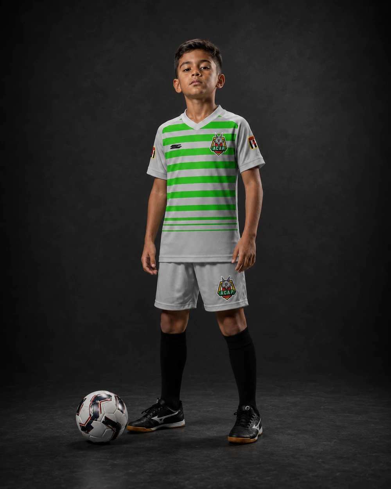
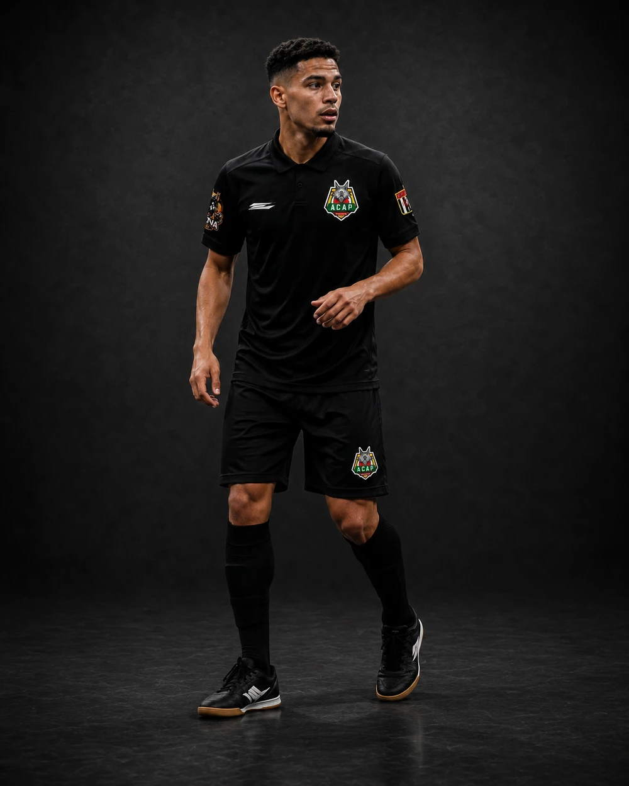
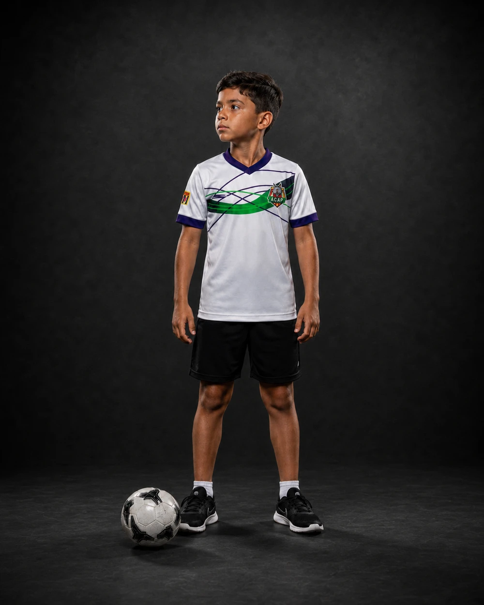
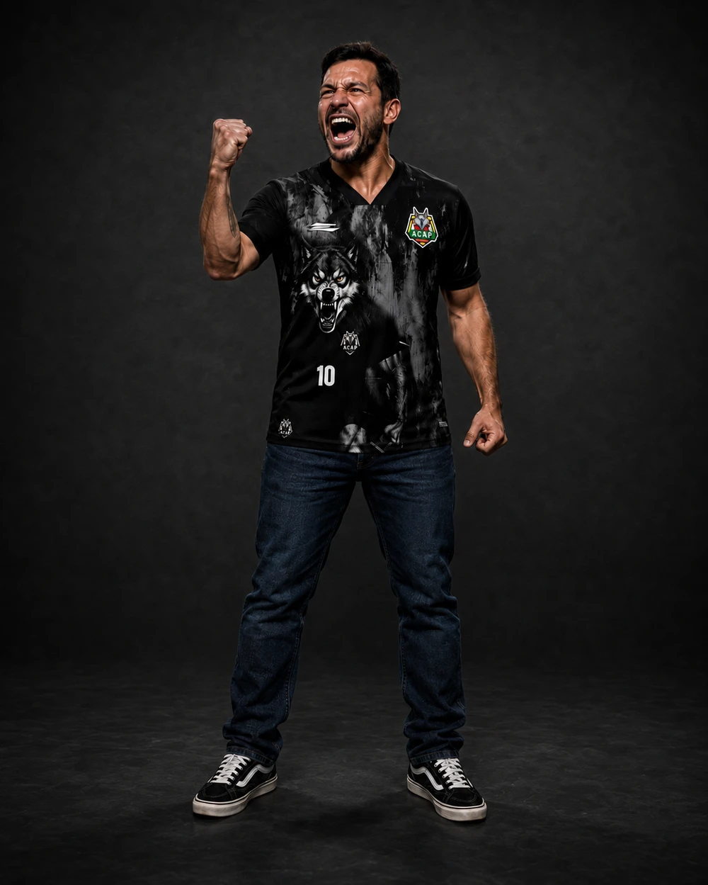
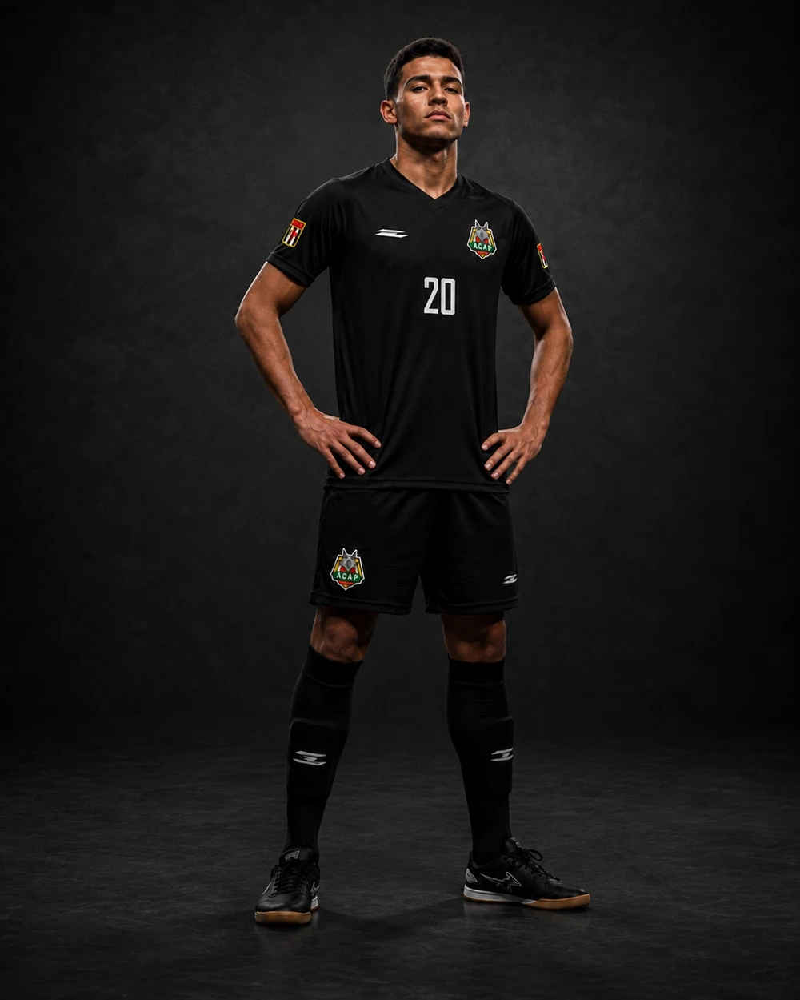
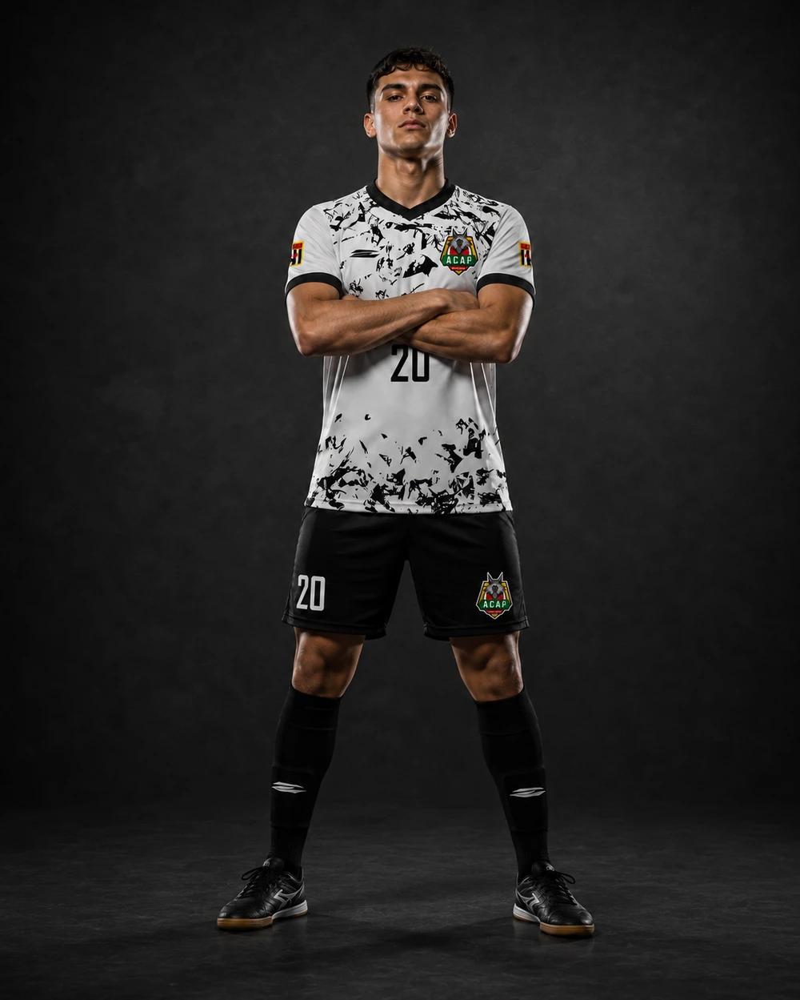

MANTO OFICIAL
Do primeiro treino ao dia de jogo: cada uniforme da ACAP tem um papel — treino, passeio, torcida e os mantos oficiais de jogo, preto e branco.
Da quadra de treino ao dia de jogo pela Federação — cada uniforme da ACAP tem uma função dentro do clube.

Camisa de treino das categorias de base, do Sub-7 ao Sub-14.

Camisa de treino das categorias mais avançadas da base.

Peça oficial de circulação do clube, usada em viagens e compromissos fora de quadra.

A camisa de quem também veste a causa — pra torcer com a matilha, dentro e fora da arquibancada.

Um dos mantos oficiais de jogo da ACAP na Federação.

O segundo manto oficial, usado conforme a tabela de mando da Federação.